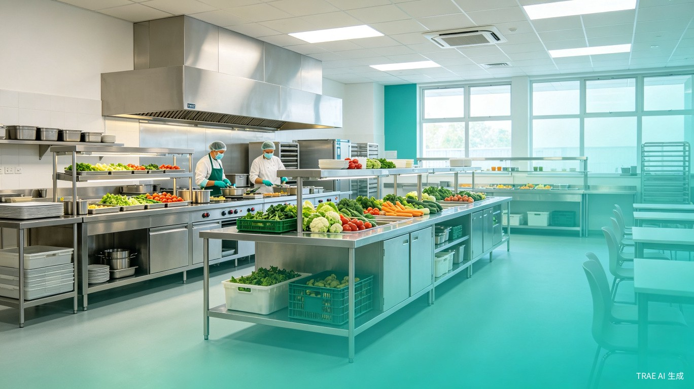
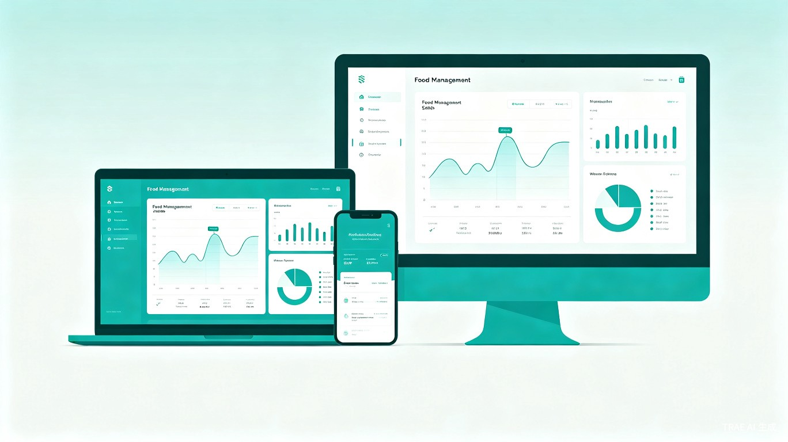

🌐
Web 管理后台
Vue 3 + Element Plus

全链路数字化管理，守护校园食品安全，让每一餐都可追溯
Contents · 目录
传统食材管理面临的挑战
定位、目标与核心价值
前后端分离、多端统一
采购、库存、追溯、财务
从下单到出库的完整链路
Web、桌面、移动端
Part 01 · 第一部分
传统校园食材管理面临的五大核心挑战
Challenges · 行业痛点
纸质记录、人工统计、信息孤岛，食品安全事件频发
食材来源、配送记录、验收结果分散在纸质单据中，一旦发生食品安全事件，无法快速定位问题源头
缺乏实时库存监控，经常出现食材过期或短缺，据统计学校食堂食材浪费率高达 15%-20%
供应商、学校、教育局之间信息传递依赖电话和微信群，沟通成本高、易出错
采购、入库、出库数据分散，月末对账需要大量人工核对，周期长且易出错
教育局难以实时掌握辖区内各学校食材采购和食品安全状况，监管存在盲区
Part 02 · 第二部分
覆盖供应商、学校、教育局三方的全链路数字化管理平台
Overview · 平台定位
供应商端
资质管理、订单处理、电子发票、评价考核
学校端
采购计划、入库验收、库存管理、出库领用、财务报表
教育局端
数据汇总、安全监管、黑名单管理、数据上报
家长端
菜品查看、食材溯源查询
Part 03 · 第三部分
前后端分离、多端统一 API、容器化部署
Architecture · 系统架构
Vue 3 + Element Plus
PyQt6
原生开发
小程序查询
反向代理 / SSL / 静态资源
Token + 角色权限
Python 3.11 高性能 API
RESTful API
异步任务 / 定时调度
主数据库
缓存 / 消息队列
文件 / 影像存储
Part 04 · 第四部分
11 个 API 模块，覆盖供应链全流程
Features · 核心功能
采购计划、订单创建、审批流、6种订单状态跟踪
双人验收机制、影像记录、质检报告上传
实时库存、安全库存预警、自动盘点
领用申请、审批、出库记录、消耗统计
追溯码生成、全链路追踪、检测报告关联
自动对账、电子发票、月度/年度报表
资质审核、评级考核、黑名单机制
分类体系、规格管理、保质期跟踪
辖区数据汇总、安全预警、黑名单共享
Workflow · 业务流程
学校制定需求
供应商接单
双人验收+影像
库存更新
消耗记录
全链路可查
Comparison · 对比

Multi-Platform · 多端覆盖
所有终端共享同一套 FastAPI 后端服务，通过 JWT 认证和 RBAC 权限控制，确保数据安全隔离。
Deployment · 部署方案
反向代理、SSL 终止、静态资源服务
Port 80/443主 API 服务，处理所有业务逻辑
Port 8000异步任务处理 + Beat 定时调度
后台运行PostgreSQL + Redis + MinIO 三件套
持久化Dashboard · 数据看板
覆盖学校
辖区内学校
月采购额
本月总计
安全合格率
质检通过
预警事件
待处理
Analytics · 数据分析
平台支持按分类、供应商、时间段多维度分析采购数据，帮助学校优化采购策略，降低成本。
守护校园食品安全，让每一餐都可追溯